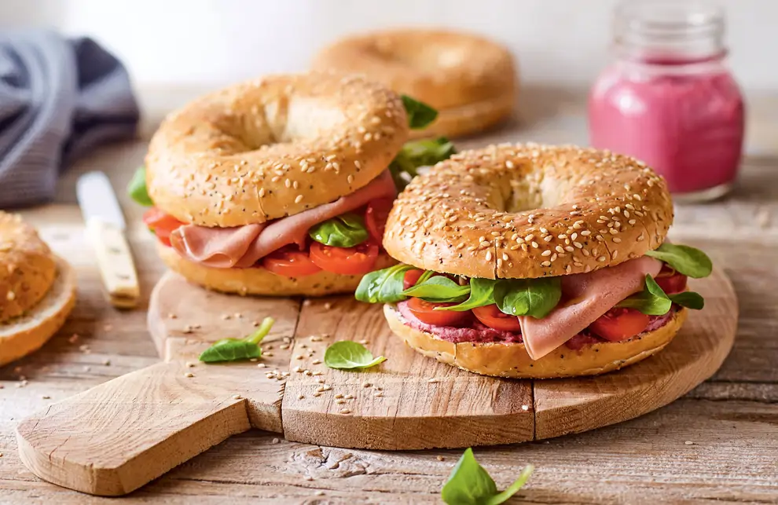

Un desayuno sofisticado y original que combina proteína magra de pavo con antioxidantes de la remolacha. Este bagel gourmet es el desayuno perfecto para quienes buscan algo diferente, nutritivo y elegante para romper el ayuno nocturno.
Este desayuno es un concentrado de antioxidantes y vitaminas. La remolacha aporta betalaínas (pigmentos antioxidantes únicos), nitratos para flujo sanguíneo mejorado, y aceleración metabólica. El pavo es proteína magrísima (casi cero grasas saturadas). Juntos crean un desayuno que acelera el metabolismo, rompe el ayuno sin pesadez, y proporciona energía mental y física sostenida.
Corta el bagel por la mitad y coloca en la tostadora o horno a 200°C durante 3-4 minutos. Busca que esté ligeramente tostado pero aún con textura blanda en el interior.
Una vez tostado, extiende el hummus de remolacha generosamente sobre ambas mitades del bagel. Si el hummus es casero, mezcla bien antes de usar.
Coloca las lonchas de pavo sobre el hummus. Si lo prefieres, corta el pavo en trozos pequeños para mejor distribución. El jamón de pavo debe quedar crujiente.
Cubre con rúcula fresca o espinacas. Añade rodajas de remolacha si lo deseas. Espolvorea pimienta recién molida y brotes de alfalfa. ¡Sirve inmediatamente!